전파전자기능사(구) (2011-09-25 기출문제)
1과목: 임의 구분
1. SSB 송수신기의 특징으로 적당하지 않은 것은?
- 점유주파수대역폭인 DSB의 반으로 줄어든다.
- 주파수 이용도를 DSB에 비해 2배 정도 증가시킬수 있다.
- 변조도가 1인 경우 소비전력은 DSB의 1/6 정도로 적은 전력으로 작동될 수 있다.
- 외부잡음과 페이딩의 영향은 DSB의 경우와 같다.
(정답률: 알수없음)

2. 다음 중 송신기의 보호 장치가 아닌 것은?
- 완충증폭기
- 자동차단기
- 타이머계전기
- 과부하계전기
(정답률: 알수없음)
3. 슈터헤테로다인 수신기의 특징으로 잘못된 것은?
- 영상주파수에 의한 혼신을 받는다.
- 회로가 복잡하고 조정이 어렵다.
- 주파수 변환에 따른 혼신 방해와 잡음이 거의 없다.
- 국부발진기의 주파수 안정도가 나쁘면 수신상태가 나빠진다.
(정답률: 알수없음)
4. 마이크로파 통신의 특징으로 옳지 않은 것은?
- 반송파 주파수가 높으므로 외부 잡음의 영향이 작다.
- 지향성이 예민하여 점대점(point to point) 통신이 가능하다.
- 통신범위는 일반적으로 큰 장애물이 없는 가시거리 내이다.
- 파장이 짧으므로 전리층을 이용한 원거리 통신이 용이하다.
(정답률: 알수없음)
5. 무선 송신기의 회로 구성요소와 관계 없는 것은?
- 수정발진회로
- 전력증폭회로
- 변조회로
- 자동음량조절회로
(정답률: 알수없음)
6. 무선송신기에서 주파수 체배기를 사용하는 이유로 적합한 것은?
- 큰 송신출력을 얻기 위하여
- 작동 및 조작을 원만히 행하기 위하여
- 기생 진동의 발생을 방지하기 위하여
- 수정편의 발진주파수보다 높은 주파수의 반송파를 얻기 위하여
(정답률: 알수없음)
7. 단파 통신의 특징으로 거리가 먼 것은?
- 원거리 및 지향성 통신이 가능하다.
- 원거리 통신을 위해 대전력이 요구된다.
- 불감지대가 나타난다.
- 전리층 밀도의 변화에 따라 도약거리가 변화한다.
(정답률: 알수없음)
8. 다음 중 선박의 단파통신에 주로 이용되는 전리층은?
- D층
- E층
- Es층
- F층
(정답률: 알수없음)
9. 30[MHz] 주파수의 파장은?
- 1 [m]
- 5 [m]
- 10[m]
- 100[m]
(정답률: 알수없음)
10. 공중선에서 복사된 전자파의 전파통로에 따른 분류와 다른 것은?
- 지상파
- 대류권파
- 전리층파
- 오존층파
(정답률: 알수없음)
11. 다음 중 선박의 단파통신에서 주간에 사용하던 파장대가 야간에 감도가 떨어지는 경우 조치사항으로 가장 적합한 것은?
- AGC 회로를 동작시켜 본다.
- 수신 다이버시티 기법을 활용한다.
- 스켈치회로를 동작시켜 본다.
- 낮은 주파수대로 바꾸어 본다.
(정답률: 알수없음)
12. 다음 중 지표파의 전파가 가장 손실이 적은 환경은?
- 시가지
- 평야
- 해상
- 산악
(정답률: 알수없음)
13. 신호전압이 0.5[V]이고, 잡음전압이 0.5 [mV]이면 S/N비는?
- 10 [dB]
- 20 [dB]
- 40 [dB]
- 60 [dB]
(정답률: 알수없음)
14. 정지 궤도 위성통신의 장점으로 볼 수 없는 것은?
- 서비스지역이 넓다.
- 광대역 통신이 가능하다.
- 통신망 구축이 용이하다.
- 통신 보안 장치가 불필요하다.
(정답률: 알수없음)
15. 1[W]는 몇 [dBm] 인가?
- 0[dBm]
- 10[dBm]
- 20[dBm]
- 30[dBm]
(정답률: 알수없음)
16. 오실로스코프의 수직축과 수평축 입력에 주파수와 진폭이 같고, 위상이 45도 다른 전압을 가하면 스코프에 나타나는 리사주 도형은 어떤 모양인가?
- 사선
- 타원
- 원
- 사각형
(정답률: 알수없음)
17. 수신기를 재조정하지 않고 얼마나 긴 시간 동안 만족스러운 출력을 낼 수 있는가 하는 능력을 무엇이라 하는가?
- 선택도
- 충실도
- 안정도
- 잡음지수
(정답률: 알수없음)
18. 무선수신기 고주파 증폭회로의 작용과 거리가 먼 것은?
- 감도가 증가한다.
- 선택도가 좋아진다.
- S/N 비가 좋아진다.
- 용량이 증가한다.
(정답률: 알수없음)
19. 축전지 용량 시험 회로에서 무부하시 전압이 20[V]이고, 부하저항 9[Ω]을 접속했을 때, 전류의 값이 2[A]라고 한다면, 축전지 내부저항은?
- 1[Ω]
- 2[Ω]
- 3[Ω]
- 4[Ω]
(정답률: 알수없음)
20. 다음 중 전압 안정화 회로에 주로 쓰이는 다이오드(Diode)는?
- 제너 다이오드
- 바렉터 다이오드
- 정류용 다이오드
- 터널 다이오드
(정답률: 알수없음)
2과목: 임의 구분
21. 다음 중 국제전기통신연합(ITU)의 목적이 아닌 것은?
- to promote the extension of the benefits of the new telecommunication technologies
- to promote the adoption of GMDSS for ensuring the safety of life through the cooperation of telecommunication services
- to promote and to offer rechnical assistance to developing countries in the field oftelecommunications
- to maintain and extend international cooperation between all Members of the Union
(정답률: 알수없음)
22. 다음 문장의 괄호 안에 가장 적합한 것은?
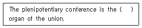
- top system
- structure
- supreme
- council
(정답률: 알수없음)
23. What do you call the telecommunication by means of radio waves?
- Communication
- Radiocommunication
- Wireless communication
- Multimedia communication
(정답률: 알수없음)
24. 다음 중 통신 우선순위가 가장 높은 것은?
- Urgency communications
- Safety communications
- Distress calls
- Public correspondence
(정답률: 알수없음)
25. 문맥상 괄호 안에 가장 적당한 단어는?
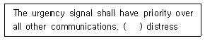
- except
- ever
- whenever
- of
(정답률: 알수없음)
26. 다음 문장의 괄호 안에 가장 적당한 단어는?
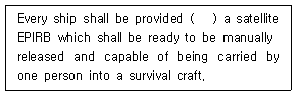
- such
- of
- ever
- with
(정답률: 알수없음)
27. What distress signal do you send in radiotelephony?
- K
- SOS
- VVV
- MAYDAY
(정답률: 알수없음)
28. GMDSS에 관해 기술된 주파수 및 기법을 사용하는 선박국 및 선박 지구국의 직원을 위한 증명서의 종류가 아닌 것은?
- First-class Radio Electronic Certificate
- Second-class Radio Electronic Certificate
- General Officer's Certificate
- Restricted Operator's Certificate
(정답률: 알수없음)
29. 다음 문장에서 밑줄 친 부분의 해석으로 가장 적합한 것은?
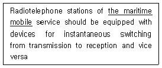
- 해양동력장치
- 무선표시업무
- 해상이동업무
- 해안자동탐색
(정답률: 알수없음)
30. 다음 약어 중 "선하증권"을 뜻하는 것은?
- L/C
- L/A
- B/L
- C/O
(정답률: 알수없음)
31. 다음 문장을 가장 적합하게 영역한 것은?
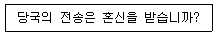
- Is my transmission being interfered with?
- Are you troubled by static?
- Shall I send more slowly?
- When will you call me again?
(정답률: 알수없음)
32. 다음 뜻의 약어는?
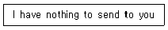
- NIL
- NO
- NW
- OL
(정답률: 알수없음)
33. "ALUX"라는 호출부호를 음성 통화표에 의해 옳게 풀어 쓴 것은?
- Alfa Lima Uniform X-ray
- Age Lime Unions X-mas
- Aggree Leema Ultra X-phone
- Aut lima ultra X-ray
(정답률: 알수없음)
34. 다음 중 Figure(숫자) 또는 Mark(기호) code가 적절하게 표현되지 않은 것은?
- 1 - UNAONE
- 4 - KARTEFOUR
- 8 - OKEITEEN
- 마침점 - STOP
(정답률: 알수없음)
35. 다음 문장의 회신에서 괄호 안에 들어갈 단어로 적합하지 않은 것은?
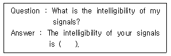
- fair
- commercial
- poor
- good
(정답률: 알수없음)
36. 다음 중 아래의 내용을 표현하는 데 적합한 무선전화 절차 용어는?
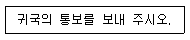
- Wait
- Off
- Stop
- Go ahead
(정답률: 알수없음)
37. 다음 문장에 대한 번역으로 적절한 것은?
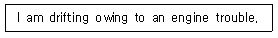
- 본선은 기관고장으로 예인 중이다.
- 본선은 기관고장으로 수리 중이다.
- 본선은 기관고장으로 표류 중이다.
- 본선은 기관고장으로 대기상태다.
(정답률: 알수없음)
38. 다음 문장의 밑줄 친 부분의 뜻과 같은 문장은?
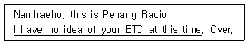
- I don't have to know your ETD at this time.
- I don't know your ETD at this time
- I didn't know of your ETD at this time.
- I have a idea of your ETD at this time.
(정답률: 알수없음)
39. 다음의 문장을 표준 해사영어로 번역하였을 때 괄호 안에 들어갈 가장 적당한 단어는?
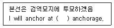
- waiting
- pilot
- custom
- quarantine
(정답률: 알수없음)
40. 다음 문장에 대한 번역으로 옳은 것은?
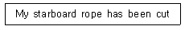
- 이곳의 좌현의 예인 로프는 절단되었다.
- 이곳의 우현의 예인 로프는 절단되었다.
- 이곳의 선수의 예인 로프는 절단되었다.
- 이곳의 선미의 예인 로프는 절단되었다.
(정답률: 알수없음)
3과목: 임의 구분
41. 다음 중 방송통신위원회가 주파수 할당을 할 때의 공고해야 할 사항으로 옳지 않은 것은?
- 할당대상 주파수 및 대역폭
- 주파수할당 대가
- 할당방법 및 시기
- 주파수 이용 장소
(정답률: 알수없음)
42. 방송통신위원회가 대가에 의한 주파수를 할당하는 경우 주파수의 이용기간은 최대 몇 년의 범위에 정하여 고시하는가?
- 5년
- 10년
- 15년
- 20년
(정답률: 알수없음)
43. 다음 중 심사에 의한 주파수 할당 시 심사하여야 할 사항이 아닌 것은?
- 신청자의 재정적 능력
- 신청자의 기술적 능력
- 신청자의 사회적 역량
- 전파자원 이용의 효율성
(정답률: 알수없음)
44. 다음 중 방송통신위원회가 주파수를 이용기간이 끝날 당시의 주파수 이용자에게 재할당을 할 수 있는 경우는?
- 주파수 이용자가 재할당을 원하는 경우
- 해당 주파수를 국방 및 조난 구조용으로 사용할 필요가 있는 경우
- 국제전기통신연합이 해당 주파수를 다른 업무 또는 용도로 분배한 경우
- 해당 주파수를 치안용으로 사용할 필요가 있는 경우
(정답률: 알수없음)
45. 무선국의 개설허가를 받으려는 자는 허가신청서를 누구에게(어디에) 제출하여야 하는가?
- 전파연구소장
- 한국방송통신전파진흥원
- 방송통신위원회
- 지식경제부장관
(정답률: 알수없음)
46. 다음 중 무선국 허가의 결격사유(외국성의 배제)에 해당되지 않는 사람은?
- 외국의 법인 또는 단체
- 대한민국 국적을 가지지 아니한 사람
- 외국인으로 우리나라의 국적을 얻은 사람
- 외국의 정부 또는 그 대표자
(정답률: 알수없음)
47. 다음 중 디지털선택호출장치의 조난주파수가 아닌 것은?
- 2187.5[kHz]
- 8414.5[kHz]
- 156.8[kHz]
- 156.525[MHz]
(정답률: 알수없음)
48. 다음 중 비상통신에 있어서의 통보송신의 우선순위가 가장 빠른 것은?
- 조난자 구조에 관한 통보
- 천재의 예보에 관한 통보
- 인명의 구조에 관한 통보
- 질서유지를 위하여 필요한 긴급조치에 관한 통보
(정답률: 알수없음)
49. H3E 전파를 사용하는 무선설비의 점유주파수대폭의 허용치는?
- 1[kHz]
- 3[kHz]
- 5[kHz]
- 10[kHz]
(정답률: 알수없음)
50. 다음 중 방송통신위원회가 무선국 개설허가를 취소 또는 개설신고한 무선국의 폐지를 명하거나 무선국의 변경·운용제한 또는 운용정지를 명할 수 있는 경우가 아닌 것은?
- 비상사태가 발생한 경우
- 혼신을 방지하기 위하여 필요한 경우
- 주파수 회수를 한 경우
- 주파수 할당을 한 경우
(정답률: 알수없음)
51. 다음 중 1년 이상의 유기징역에 처하는 경우가 아닌 것은?
- 안전통신을 발신하여야 할 사태에 이르렀는데도 그 선장이나 기장이 필요한 명령을 하지 아니한 자
- 조난통신을 발신하여야 할 사태에 이르렀는데도 그 선장이나 기장이 필요한 명령을 하지 아니한 자
- 무선통신업무에 종사하는 자로서 조난통신을 수신하고도 그 조난 통신의 조치를 하지 아니한 자
- 운영정지된 무선국을 운용한 자
(정답률: 알수없음)
52. GMDSS에서 조난경보 DSC용으로 사용하는 주파수대가 아닌 것은?
- LF
- MF
- HF
- VHF
(정답률: 알수없음)
53. MF대의 무선전화용 조난 및 안전주파수로 옳은 것은?
- 2.174.5[kHz]
- 2.182[kHz]
- 2.199.5[kHz]
- 2.091[kHz]
(정답률: 알수없음)
54. 국제 NAVTEX 서비스(International NAVTEX service)의 사용언어는?
- English
- French
- German
- Russian
(정답률: 알수없음)
55. 다음 문장의 밑줄 친 용어를 우리말로 가장 잘 표현한 것은?
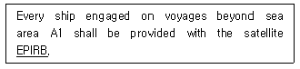
- 지구위치 비교국
- 지구위치 식별표지국
- 비상위치위원국
- 비상위치지사용 무선표지설비
(정답률: 알수없음)
56. 다음 중 암호보안의 대책으로 틀린 것은?
- 암호와 평문의 이중송신 금지
- 암호와 평문의 혼합사용
- 적시적인 자재 변경 사용
- 사용법 준수
(정답률: 알수없음)
57. 다음 중 대외비로 분류되어 비인가자도 업무상 필요할 때 취급할 수 있는 보안자재는?
- 약어자재
- 약호자재
- 암호자재
- 음어자재
(정답률: 알수없음)
58. 다음 중 비밀누설에 대한 방지법으로 볼 수 없는 것은?
- 통신보안 생활화
- 통신규율 중시
- 중요내용은 전신부호를 사용
- 감독 강화
(정답률: 알수없음)
59. 다음 중 통신시설 보호구역이 아닌 것은?
- 제한지역
- 통제구역
- 금지지역
- 제한구역
(정답률: 알수없음)
60. 다음 중 통신보안 위규사항이 아닌 것은?
- 적성국 통신소와의 교신
- 공개할 수 없는 외교 조약 누설
- 청보 수집사항 누설
- 통신제원의 수시변경
(정답률: 알수없음)